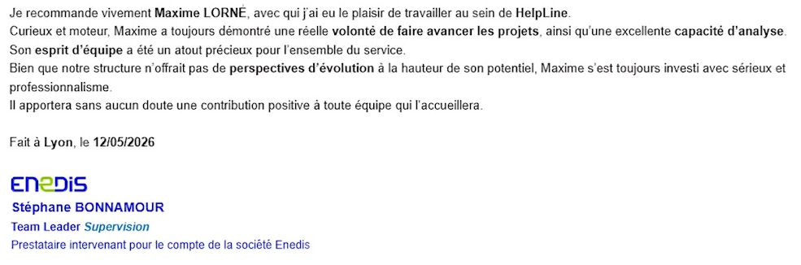

Technicien Helpdesk Confirmé & Supervision d'Infrastructures
Issu d'un DUT Informatique, j'ai forgé mes 3 ans d'expérience sur le terrain.
Je suis passé du support technique (N2) à la supervision globale d'environnements critiques. Habitué aux roulements en 3x8 et 7j/7, je sais gérer l'urgence avec sang-froid et creuser les incidents pour en trouver l'origine.
Environnements : Windows Server, Linux (Scripting bash).
Outils : ServiceNow, Jira, SCCM, PowerShell.
ENEDIS
RÉFÉRENT ACTIVE DIRECTORY SPIE (Client : Areva, 30 000 utilisateurs) [TOULOUSE]
Août 2021 - Septembre 2022
- Gestion et administration de l'Active Directory.
- Déploiement et installation logicielle via SCCM.
- Support N1 à distance sur un très large périmètre utilisateur.
- Rythme d'appel soutenu, 5 minutes par appel.
SUPPORT IT N1/N2 SII (Client : Airbus DS, 300 utilisateurs) [TOULOUSE]
Novembre 2023 - Mars 2024
- Support technique aux utilisateurs (Niveaux 1 et 2) à distance et sur place.
- Accompagnement et migration d'environnements vers Office 365.
- Masterisation de postes clients et configuration.
- Automatisation de tâches et scripting via PowerShell.
- Rythme d'appel léger. Pas de temps requis pour traiter l'appel.
TECHNICIEN SUPPORT N2 chez ISI SOLUTIONS, environ 100 utilisateurs. [ANNECY]
Décembre 2024 - Mars 2025
- Support informatique à distance sur environnements Windows et Mac.
- Gestion en autonomie du pôle d'assistance.
- Résolution d'incidents serveurs et administration des sessions RDS.
- Préparation et déploiement de mini-PC (Intel NUC)
SUPERVISEUR IT HELPLINE (Client : Enedis) [LYON]
Juin 2025 - Mai 2026
- Monitoring global d'infrastructures en environnement Windows.
- Gestion proactive des alertes et pilotage d'incidents via ServiceNow.
- Exécution de scripts SSH pour la maintenance et la vérification des serveurs.
- Environnement critique : roulements 3x8, 7j/7, gestion de crise.

Cliquez sur la lettre pour l'afficher en plein écran